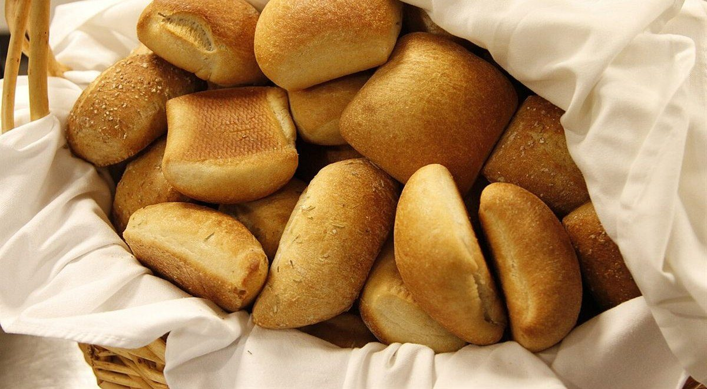

ベーカリー / 沖縄県うるま市安慶名
ダダンBakeryShop
うるま市安慶名にあるベーカリー「BakeryShopダダン」のご案内ページです。営業時間やメニューなど、詳しいことは準備中。まずは電話かInstagramからどうぞ。

制作側の連想
「ダ・ダ・ン」を太鼓の口唱歌に見立てて
店名の由来は分かりません。制作側は「ダダン」という音の並びから、太鼓の「ダ、ダ、ン」という拍を連想し、このサイトを三拍で組みました。二つの塗りつぶしの丸(ダ、ダ)と、中の抜けた一つの輪(ン)がその目印です。お店の理念・由来とは無関係な、制作側の連想です。
一小節め
ダ・ダ・ンの三拍(イメージ)
写真は国外・撮影地不明のフリー素材で、お店や商品の写真ではありません。
ダ
撮影地不明のイメージ
ダ
国外のイメージ(香港)
ン撮影地不明のイメージ

二小節め
ご案内(確認できたものだけ)
| 所在地 | 〒904-2214 沖縄県うるま市安慶名3丁目28-27 |
|---|---|
| 電話 | 098-960-5186 |
| 営業時間 | 準備中 |
| 定休日 | 準備中 |
| ご予約 | 準備中 |
| 駐車場 | 準備中 |
| SNS | Instagram @bakeryshopdadan |